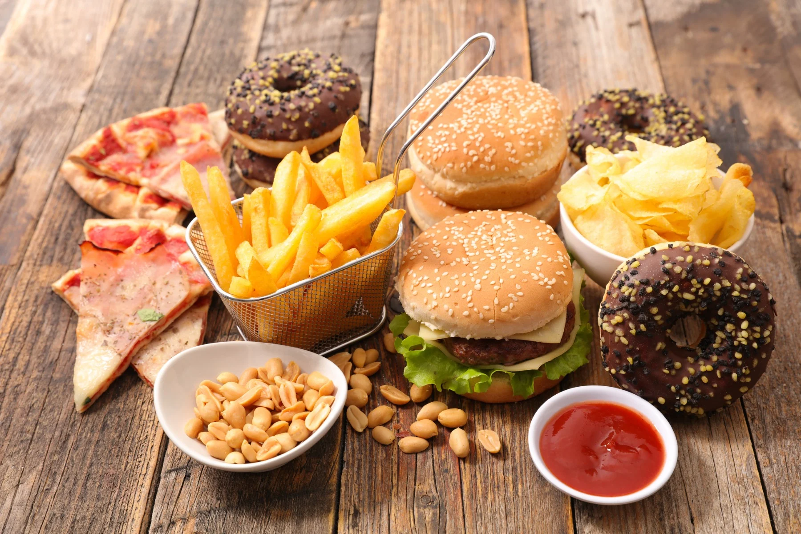

Cheat meal - przyjaciel czy wróg Twojej redukcji?

O czym przeczytasz w tym wpisie?
1. Czym jest cheat meal?
2. Po co się go stosuje?
3. Jakie są potencjalne „korzyści” z jego zastosowania?
4. Jakie wady i zagrożenia niesie ze sobą cheat meal?
5. Co uważam o stosowaniu cheat meal’a?
6. Werdykt końcowy- TAK czy NIE?
1) CHEAT MEAL to tzw. oszukany posiłek. W praktyce cheat meal'em nazywamy jeden z posiłków w trakcie dnia, na który możemy zjeść cokolwiek na co mamy ochotę. Jest to "nagroda" po tygodniu trzymania się diety.
2) Zwolennicy tej metody mówią o tym, że pozwala nam spełnić nasze zachcianki psychiczne, a jednocześnie przyśpiesza metabolizm co razem przekłada się na lepsze efekty odchudzania.
3) Czy rzeczywiście oszukany posiłek działa w ten sposób? O tym na końcu wpisu, a teraz przeanalizujmy jakie potencjalne "korzyści" może mieć uwzględnienie "cheat meala" w procesie odchudzania:
- aspekt psychiczny - "Przyzwolenie" na zjedzenie czegoś spoza diety pozwala na chwilę zapomnieć o reżimie żywieniowym i odpocząć psychicznie od zakazów
w jadłospisie
- aspekt społeczny - Osoby, które kurczowo trzymają się restrykcyjnych diet często odmawiają wyjścia z bliskimi, ponieważ wiąże się to ze zjedzeniem czegoś "zakazanego". Oszukany posiłek to okazja, aby zjeść coś na mieście w towarzystwie rodziny czy bliskich, nie myśląc o tym, że dieta została " złamana" bo mamy na to przyzwolenie
- aspekt fizyczny- Zwolennicy cheat meala obiecująco przekonują nas, że przyśpiesza on nasz metabolizm i tempo dalszej redukcji
Niestety jest to MIT,
a dostarczenie sporej nadwyżki kalorycznej w trakcie takiego posiłku może zatrzymać lub opóźnić proces odchudzania.
4) Druga strona medalu, czyli wady i zagrożenia jakie niesie za sobą cheat meal
- niezdrowe relacje z jedzeniem
Zbyt duże restrykcje żywieniowe na codzień w połączeniu z przyzwoleniem na obżarstwo raz w tygodniu bardzo negatywnie wpływają na stosunek do jedzenia i powodują, że zaczynamy dzielić jedzenie na "dozwolone" i "zakazane", zaczynamy bać się jedzenia i traktować je jako coś złego, podchodzimy do jedzenia emocjonalnie przypisując mu (zbyt)wysokie miejsce
w hierarchii ważnych dla nas kwestii życiowych
- ryzyko zaburzeń odżywiania
Jeśli przez 6dni w tygodniu powstrzymujesz się przed tym aby zjeść ciasto, chociaż masz na nie ochotę i czekasz do tego dnia, w którym możesz " bezkarnie " zjeść co tylko chcesz to długoterminowo takie podejście może skutkować zaburzeniami odżywiania (ortoreksja, kompulsywne objadanie, bulimia
i inne)
- zatrzymanie lub opóźnienie odchudzania - tak jak napisałam wyżej jeśli zjemy w trakcie takiego posiłku bardzo dużo, to wygenerujemy nadwyżkę kaloryczną która może wydłużyć proces odchudzania
5) Aby ocenić czy warto stosować cheat meal wróćmy jeszcze do nazwy- OSZUKANY POSIŁEK. W moim odczuciu ma to bardzo negatywny wydźwięk, bo kogo tak naprawdę chcemy oszukać? Samych siebie?
Uważam że w odżywianiu powinniśmy kierować się zdrowym rozsądkiem, równowagą, a podstawą tego jak jemy na codzień powinny być zdrowe nawyki żywieniowe. Zachowując balans i umiar, w Twoim jadłospisie znajdzie się miejsce na pizzę czy szarlotkę babci od czasu do czasu jak również na całkowite wyluzowanie podczas urlopu, podczas którego bazujemy na wypracowanych nawykach żywieniowych.
Jedzenia nie powinniśmy dzielić na dozwolone i zakazane.
Jedzenie nie jest też nagrodą ani pocieszycielem.
6) Cheat meal ma więcej wad i potencjalnych zagrożeń dla nas aniżeli zalet, dlatego nie warto stosować go u siebie. Dużo lepszym rozwiązaniem będzie wypracowanie zdrowych nawyków żywieniowych i nauka intuicyjnego jedzenia